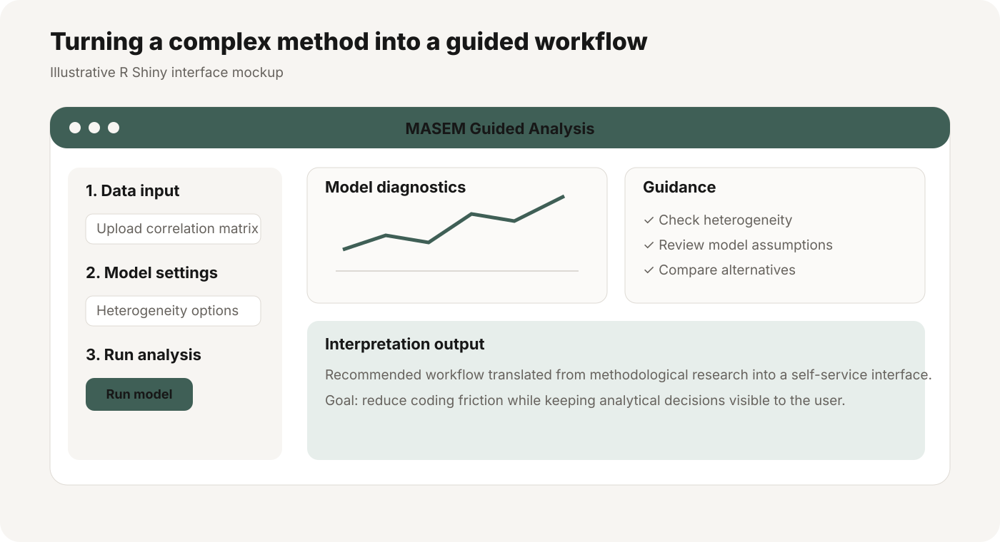

MASEM Research Tool
A research-to-product project: identify where a complex analytical method can mislead users, test the problem empirically, publish guidance, then turn that guidance into a self-service workflow.

User problem
Meta-analytic structural equation modeling is powerful but technically demanding. Researchers can make consequential choices about heterogeneity, pooling, and model specification without always seeing when those choices distort conclusions.
My role
- Led first-author methodological research on failure points in meta-analytic SEM.
- Tested how analytical choices behave under different conditions.
- Developed practical guidance for researchers.
- Personally implemented the statistical R backend, developed the interactive Shiny interface, and deployed the application publicly so users could apply the workflow without writing custom code.
Why this is user-centered research
The work starts with a real user problem: researchers need to make complex methodological decisions correctly. The research identifies where the workflow breaks down, evaluates alternatives, and then reduces friction by embedding the recommended process in a tool.
Product contribution
The R Shiny application translated a specialized statistical workflow into a guided interface. That makes the methodological contribution usable beyond the small group of researchers who would implement the method directly from code. View the live app ↗
How I describe it
I call this a stakeholder-facing research product or user-centered methodological research — not conventional UX research. The users are researchers and analysts, and the product is an analytical workflow.
Related Journal of Applied Psychology publications
Yu, J., Downes, P. E., Carter, K., & O’Boyle, E. H. (2016). The problem of effect size heterogeneity in meta-analytic structural equation modeling. Journal of Applied Psychology, 101(10), 1457–1473.
Yu, J., Downes, P. E., Carter, K., & O’Boyle, E. H. (2018). The heterogeneity problem in meta-analytic structural equation modeling (MASEM) revisited: A reply to Cheung. Journal of Applied Psychology, 103(7), 804–811.
Both papers are first-author methodological contributions that informed the research-to-product logic behind the MASEM tool.
Impact
The FIMASEM work generated sustained external use and methodological consultation well beyond publication. Researchers across multiple countries contacted me while applying the method, R code, and Shiny application in their own studies.
What researchers asked about
The work also received recognition from the Academy of Management Research Methods community, and the methodological framework was translated into an interactive R Shiny application so researchers could apply it without rebuilding the full workflow from scratch.